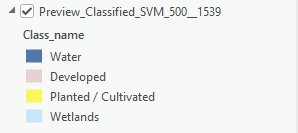
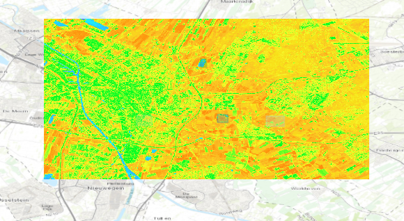

Land Cover Classification
Exploring supervised and unsupervised classification algorithms over the Utrecht region using Sentinel imagery.
False Color Composite Image of Utrecht


Infrared False Color Base Composite (B8, B4, B3). This is the satellite image of the city of Utrecht that I will be using to do a land-cover analysis.
Background & Context
Land cover classification is the process of turning raw satellite data into colorful, meaningful maps. This is extremely valuable as it allows scientists to map things like the shrinking of the amazon forest, the growth of cities or the health of crops. By using automated computer algorithms, we can analyze geographic areas with extraordinary speed, consistency and keep tracking change continuously.
There are two approaches to this: supervised and unsupervised classification.
In supervised classification, you 'teach' the computer by manually entering data. For example, you draw over a body of water and tell the computer 'This is water.' and you do the same for forests, urban areas and farmland. The computer uses the samples, called training samples, and applies this knowledge to the rest of the map.
Unsupervised classification is an automatic approach to this, so the computer learns on its own. You don't give the computer any examples or labels. Instead, you simply hand it the imagery and it groups pixels into distinct categories based on their similarities using mathematical algorithms. It then presents you with a map of anonymous groups and the human analyst looks at the results and figures out what those groups actually represent in the real world.
Pixel Spatial Resolution
Here, I downloaded the satellite image of Utrecht on arcGIS and measured the length of the pixels of the image. The approximate length and width of each pixel is 94.1 feet (28 meters), this is the spatial resolution of this sentinal composite.
Spectral Profiles

This graph shows the spectral profile of different land covers in Utrecht; agriculture, recreational areas (in this case parks), urban areas, and water. A spectral profile plots how much each land cover reflects across different wavelengths. We notice that water reflects a lot less compared to agriculture, which is logical seeing as vegetation reflects light a lot more than water or urban environments.
Unsupervised Classification: Pixel Based


This is the unsupervised land-use classification of Utrecht. We notice that the computer separated pixels into different groups. From these groups, I deduced what different colors correspond to in the city of Utrecht and labelled the legend. This version uses pixel-based classification, meaning that it treats every pixel as an isolated island and looks at their spectral profile (to what extent they reflect) and groups the pixels with others that have similar properties.
Unsupervised Classification: Object Based


This map also uses the unsupervised classification method but this time it is object based. This means the unsupervised algorithm segments pixels into groups based on spectral similarity and shape. This makes the map look more clean because there aren't single random pixels existing on their own. From the groups the algorithm created, I deduced which colors correspond to types of land in the city of Utrecht. We can notice that this map seems slightly less accurate than the point-based one, for example the bodies of water were not easily identifiable.
Supervised Classification


This map shows the supervised classification of land-uses in Utrecht. This means that the algorithm learned from the examples of land uses that I manually entered and applies these training examples to the rest of the map. While this method can be very efficient, I only entered approximately 5 training examples which is not a lot for the algorithm to learn and makes the result less precise. However, it still produced a good result, as we can see that the light pink is developed environments (urban), the yellow is planted or cultivated areas (agriculture), a lot of the bodies of water are accurate, even if they do not show canals, and the light blue is the wetlands, which do show canals as well as some forestry areas.
Normalized Difference Vegetation Index (NDVI)


This map shows the vegetation index of Utrecht (see Vegetation indexes page for more information about NDVIs). We can notice that the blue areas correspond to water, which does not reflect infrareds and therefore has a low index below 0. The orange areas have a higher index, indicating that they could correspond to agriculture or forests. Finally, the green areas seem to have an index of 0, indicating that they are urban environments.
I chose this color scheme because it shows the variations of the vegetation index very nicely, which is important for this map seeing as the variations are not extremely significant. Furthermore, it uses a large array of colors which is good because the amount of reflection is neutral. This makes it readable for a target audience of nonprofessional individuals that understand the concept of NDVIs.
Methodological Strengths & Weaknesses
Pixel-based unsupervised classification:
Strengths: Good detail. Each pixel evaluated individually and no training required for the algorithm.
Weaknesses: Isolated pixels get misclassified making a "salt and pepper" effect.
Unique insight: Shows more bodies of water than the other maps
Object-based unsupervised classification:
Strengths: Pixels are grouped so no "salt and pepper" effect.
Weaknesses: The bodies of water are inaccurate and difficult to identify
Unique Insight: Groups the land use categories into neighborhoods
Supervised Classification:
Strengths: produces the labels directly so we don't have to identify the land covers afterwards.
Weaknesses: Only 4 training samples were used which makes it lack precision.
Unique Insight: Even with minimal training data, the categories like urban and agricultural land were reasonably captured, illustrating the method's potential when scaled up with more samples.
NDVI:
Strengths: Objectively and continuously maps the vegetation health using infrared reflectance.
Weaknesses: Doesn't distinguish land cover types but instead the vegetation indexes. For example, bare/ unhealthy soil could be confused with urban environments.
Unique insight: Confirmed that Utrecht's surroundings are vegetated (orange values), while the urban core clusters around zero. This validates the other classification maps.